Bienvenido al portal informativo más completo de las Elecciones 2026.
En un momento histórico de retorno a la bicameralidad, tu poder reside en estar informado.
Seleccione una categoría para auditar a sus candidatos
BIENVENIDO AL PORTAL ELECTORAL 2026
Información oficial sobre los candidatos presidenciales, senadores y diputados.
Conoce su trayectoria y prepárate para un voto responsable en este nuevo sistema bicameral.
Voto Informado
Accede a las hojas de vida detalladas y planes de gobierno de los candidatos presidenciales.
Bicameralidad
Infórmate sobre el retorno de Senadores y Diputados para este periodo legislativo 2026-2031.
Transparencia
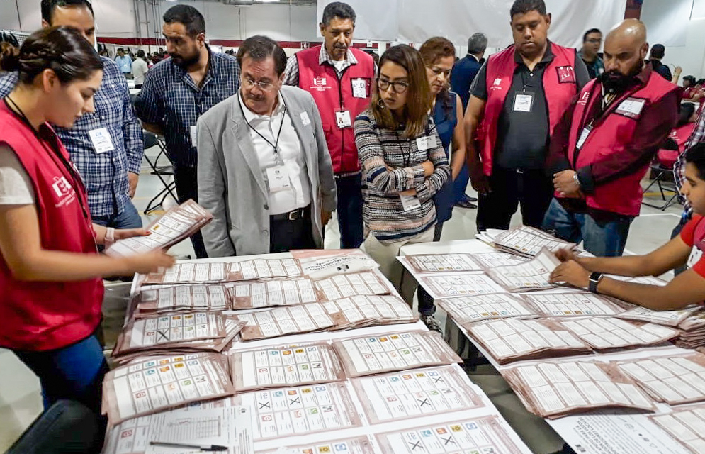
Datos verificados directamente del JNE para garantizar información veraz a la ciudadanía.
📌 Nota: Este portal es de carácter informativo. Para consultas oficiales de multas, visita el sitio de la ONPE.
CANDIDATOS A PRESIDENTE
Nombre
Foto
Partido Politico
CV
PABLO ALFONSO LOPEZ CHAU NAVA
AHORA NACION - AN
Universidad Nacional del Callao / ECONOMISTA.
Universidad Nacional del Callao / BACHILLER EN CIENCIAS ECONOMICAS.
RONALD DARWIN ATENCIO SOTOMAYOR
ALIANZA ELECTORAL VENCEREMOS
Universidad de San Martín de Porres / BACHILLER EN DERECHO Y CIENCIA POLITICA.
Universidad de San Martín de Porres / ABOGADO.
CESAR ACUÑA PERALTA
ALIANZA PARA EL PROGRESO
Universidad Nacional de Trujillo / BACHILLER EN INGENIERIA QUIMICA.
Universidad Nacional de Trujillo / INGENIERO QUIMICO.
JOSE DANIEL WILLIAMS ZAPATA
AVANZA PAIS - PARTIDO DE INTEGRACION SOCIAL
Escuela Militar de Chorrillos “Coronel Francisco Bolognesi” / BACHILLER EN CIENCIAS MILITARES
Escuela Militar de Chorrillos “Coronel Francisco Bolognesi” / LICENCIADO EN CIENCIAS MILITARES
ALVARO GONZALO PAZ DE LA BARRA FREIGEIRO
FE EN EL PERU
Universidad de San Martín de Porres/ BACHILLER EN DERECHO
Universidad de San Martín de Porres / ABOGADO
KEIKO SOFIA FUJIMORI HIGUCHI
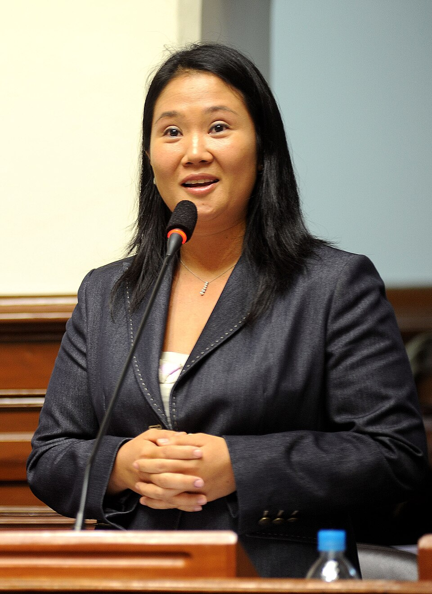
FUERZA POPULAR
BOSTON UNIVERSITY / GRADO DE LICENCIADA EN ADMINISTRACIÓN DE EMPRESAS (GRADO DE BACHILLER Y TÍTULO PROFESIONAL)
FIORELLA GIANNINA MOLINELLI ARISTONDO
FUERZA Y LIBERTAD
Pontificia Universidad Católica del Perú / BACHILLER EN CIENCIAS SOCIALES CON MENCION EN ECONOMIA
ROBERTO HELBERT SANCHEZ PALOMINO
JUNTOS POR EL PERU
Universidad Nacional Mayor de San Marcos / PSICOLOGO
Universidad Nacional Mayor de San Marcos / BACHILLER EN PSICOLOGIA
RAFAEL JORGE BELAUNDE LLOSA
LIBERTAD POPULAR
Universidad de Lima / BACHILLER EN ECONOMIA
PITTER ENRIQUE VALDERRAMA PEÑA
PARTIDO APRISTA PERUANO
Universidad de San Martín de Porres / BACHILLER EN DERECHO
RICARDO PABLO BELMONT CASSINELLI
PARTIDO CIVICO OBRAS
Universidad de Lima / BACHIYER ADMINISTRADOR DE EMPRESAS
JORGE NIETO MONTESINOS
PARTIDO DEL BUEN GOBIERNO
Pontificia Universidad Católica del Perú / BACHILLER EN CIENCIAS SOCIALES CON MENCION EN SOCIOLOGIA
CHARLIE CARRASCO SALAZAR
PARTIDO DEMOCRATA UNIDO PERU
Universidad Tecnológica de los Andes/ BACHILLER EN DERECHO
Universidad Tecnológica de los Andes / ABOGADO
ALEX GONZALES CASTILLO
PARTIDO DEMOCRATA VERDE
MINJUS DIRECCION DE CONCILIACION / CONCILIACION EXTRAJUDICIAL
ARMANDO JOAQUIN MASSE FERNANDE
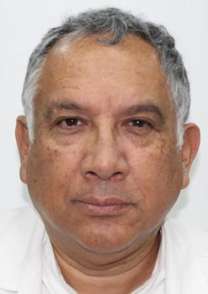
PARTIDO DEMOCRATICO FEDERAL
Universidad Nacional Mayor de San Marcos / Médico Cirujano
GEORGE PATRICK FORSYTH SOMMER
PARTIDO DEMOCRATICO SOMOS PERU
Universidad Peruana de Ciencias Aplicadas S.A.C. / BACHILLER EN ADMINISTRACIÓN DE EMPRESAS
LUIS FERNANDO OLIVERA VEGA
PARTIDO FRENTE DE LA ESPERANZA 2021
Universidad del Pacífico / BACHILLER EN CIENCIAS CON MENCION EN ADMINISTRACION
MESIAS ANTONIO GUEVARA AMASIFUEN
PARTIDO MORADO
Universidad Ricardo Palma / BACHILLER EN INGENIERIA ELECTRONICA
CARLOS GONSALO ALVAREZ LOAYZA
PARTIDO PAIS PARA TODOS
COMEDIANTE
HERBERT CALLER GUTIERREZ
PARTIDO PATRIOTICO DEL PERU
Universidad Nacional de Ingeniería / BACHILLER EN CIENCIAS
YONHY LESCANO ANCIETA
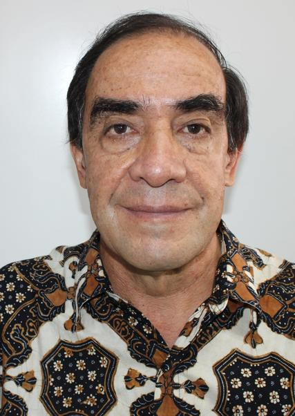
PARTIDO POLITICO COOPERACION POPULAR
Universidad Católica de Santa María / BACHILLER EN DERECHO
WOLFGANG MARIO GROZO COSTA
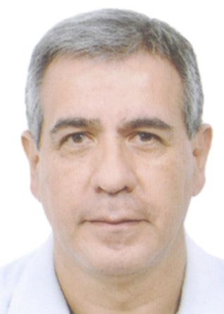
PARTIDO POLITICO INTEGRIDAD DEMOCRATICA
Escuela de Oficiales de la Fuerza Aérea del Perú /BACHILLER EN CIENCIAS DE LA ADMINISTRACION AEROESPACIAL
VLADIMIR ROY CERRON ROJAS
PARTIDO POLITICO NACIONAL PERU LIBRE
INSTITUTO SUPERIOR DE CIENCIAS MÉDICAS DE CAMAGUEY / TÍTULO DE ESPECIALISTA DE PRIMER GRADO EN NEUROCIRUGÍA
INSTITUTO SUPERIOR DE CIENCIAS MÉDICAS DE CAMAGUEY / TÍTULO DE DOCTOR EN MEDICINA
FRANCISCO ERNESTO DIEZ-CANSECO TÁVARA
PARTIDO POLITICO PERU ACCION
Universidad Nacional de Amazonia Peruana / Licenciada en Administración de Empresas
MARIO ENRIQUE VIZCARRA CORNEJO
PARTIDO POLITICO PERU PRIMERO
UNIVERSIDAD NACIONAL DE INGENIERIA / INGENIERIA INDUSTRIAL
WALTER GILMER CHIRINOS PURIZAGA
PARTIDO POLITICO PRIN
Universidad Privada Telesup S.A.C. / CONTADOR PÚBLICO
Universidad Privada Telesup S.A.C. / Bachiller en Contabilidad y Finanzas
ALFONSO CARLOS ESPA Y GARCES-ALVEAR
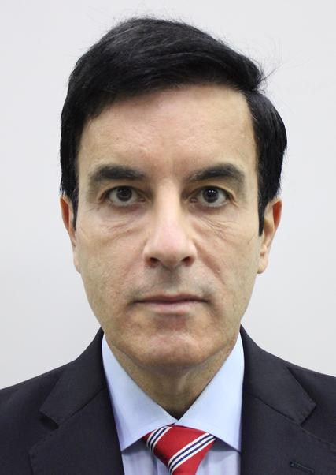
PARTIDO SICREO
Pontificia Universidad Católica del Perú / BACHILLER EN DERECHO
Pontificia Universidad Católica del Perú / ABOGADO
CARLOS ERNESTO JAICO CARRANZA
PERU MODERNO
Universidad de San Martín de Porres / ABOGADO
JOSE LEON LUNA GALVEZ
PODEMOS PERU
Universidad de San Martín de Porres / BACHILLER EN CIENCIAS ECONOMICAS
Universidad de San Martín de Porres / ECONOMISTA
MARIA SOLEDAD PEREZ TELLO DE RODRIGUEZ
PRIMERO LA GENTE - COMUNIDAD, ECOLOGIA, LIBERTAD Y PROGRESO
Universidad de San Martín de Porres / Abogada
Universidad de San Martín de Porres / Bachiller en Derecho
PAUL DAVIS JAIMES BLANCO
PROGRESEMOS
Universidad de San Martín de Porres / Abogado
Universidad de San Martín de Porres / Bachiller en Derecho y Ciencia Politica
RAFAEL BERNARDO LÓPEZ ALIAGA CAZORLA
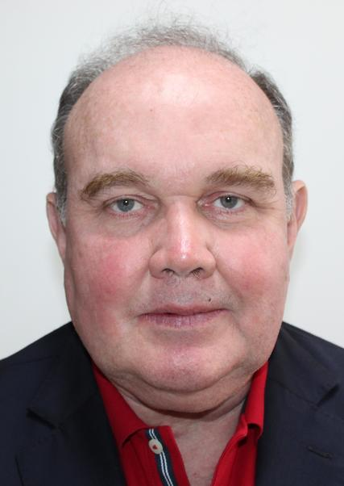
RENOVACION POPULAR
Universidad de Piura / INGENIERO INDUSTRIAL
Universidad de Piura / BACHILLER EN CIENCIAS DE LA INGENIERIA
ANTONIO ORTIZ VILLANO
SALVEMOS AL PERU
PUCP / HABILIDADES GERENCIALES
ROSARIO DEL PILAR FERNANDEZ BAZAN
UN CAMINO DIFERENTE
Universidad Privada César Vallejo / BACHILLER EN EDUCACION
ROBERTO ENRIQUE CHIABRA LEON
UNIDAD NACIONAL
Escuela Militar de Chorrillos “Coronel Francisco Bolognesi” / BACHILLER EN CIENCIAS MILITARE
Escuela Militar de Chorrillos “Coronel Francisco Bolognesi” / LICENCIADO EN CIENCIAS MILITARES
CANDIDATOS AL PARLAMENTO ANDINO
DE AVANZA PAIS
Nombre
Foto
Cargos
CV
YESSICA ROSSELLI AMURUZ DULANTO
PARLAMENTARIO
Universidad de Lima / BACHILLER EN DERECHO
Universidad de Lima / ABOGADO
MANUEL FRANCISCO GASCO CRUZ
PARLAMENTARIO
ST. CLOUD STATE UNIVERSITY / GRADO DE BACHILLER EN CIENCIAS MENCIÓN NEGOCIOS INTERNACIONALES (GRADO DE BACHILLER Y TÍTULO PROFESIONAL)
JOANNA STEPHANIE CORRALES CHOQQUE
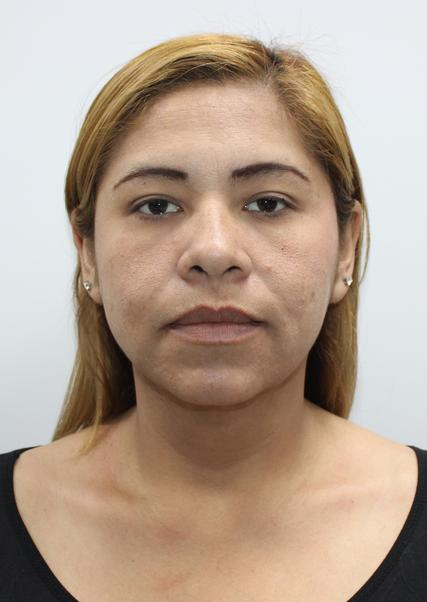
PARLAMENTARIO
No registra información
KARLA VANESA RIERA RODRIGUEZ
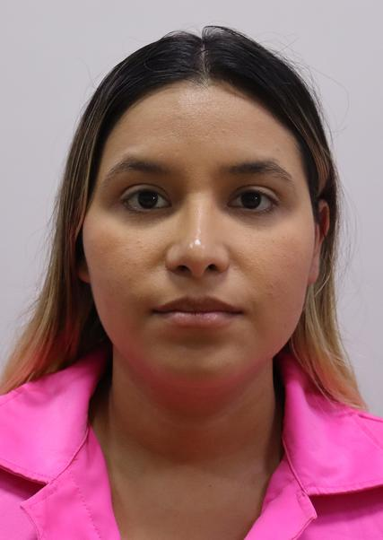
PARLAMENTARIO
No registra información
MILAGROS ANTUANET RODRIGUEZ GALLEGOS
PARLAMENTARIO
No registra información
CANDIDATOS A SENADORES
POR FUERZA POPULAR
Nombre
Foto
Cargos
CV
MIGUEL ANGEL TORRES MORALES
SENADOR
Universidad de Lima / BACHILLER EN DERECHO
Universidad de Lima / ABOGADO
MARTHA GLADYS CHAVEZ COSSIO
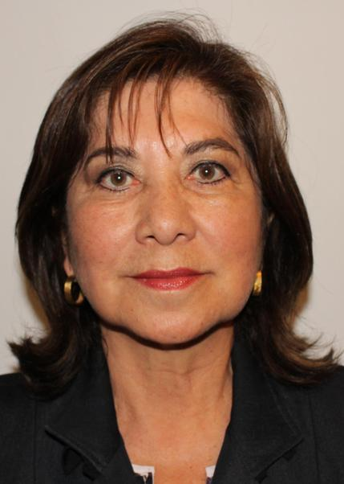
SENADOR
Universidad Catolico del Perú / BACHILLER EN DERECHO
Universidad Catolico del Perú / ABOGADO
MARTHA GLADYS CHAVEZ COSSIO
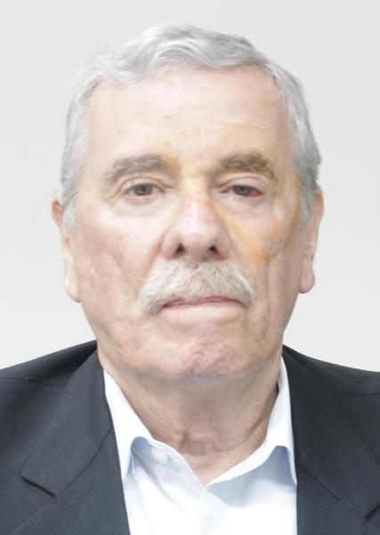
SENADOR
Universidad Catolico del Perú / BACHILLER EN CIENCIAS SOCIALES
CARMEN PATRICIA JUAREZ GALLEGOS
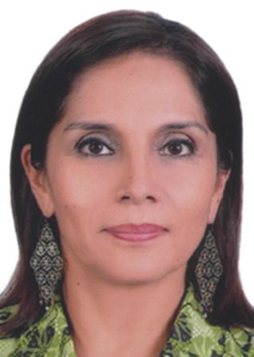
SENADOR
Universidad Federico Villareal / Bachiller en Derecho y Ciencias Políticas
ESAN / PROGRAMA DE GESTIÓN MUNICIPAL
CESAR AUGUSTO ASTUDILLO SALCEDO
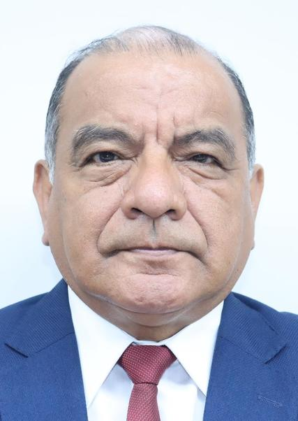
SENADOR
Universidad Alas Peruanas S.A. / INGENIERO DE SISTEMAS E INFORMATICA
Universidad Alas Peruanas S.A. / BACHILLER EN INGENIERIA DE SISTEMAS E INFORMATICA
MARTHA LUPE MOYANO DELGADO
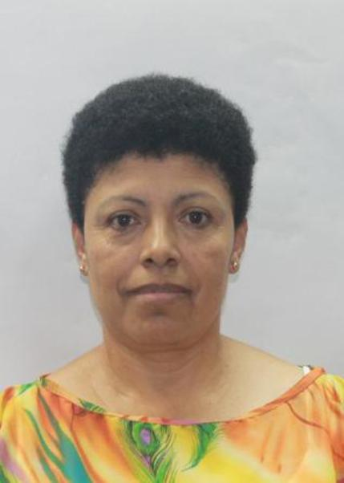
SENADOR
Universidad Privada Telesup S.A.C. / BACHILLER EN DERECHO CORPORATIVO
CARLOS MARIO DEL CARMEN TUBINO ARIAS SCHREIBER
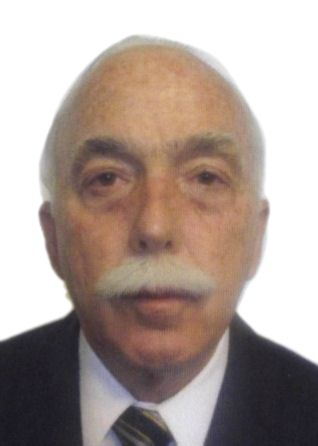
SENADOR
Escuela Naval del Perú / BACHILLER EN CIENCIAS MARÍTIMO NAVALES
Escuela Naval del Perú / LICENCIADO EN CIENCIAS MARÍTIMO NAVALES CON MENCIÓN EN COMANDO GENERAL
CECILIA ANTONIETA CASTRO TORRES
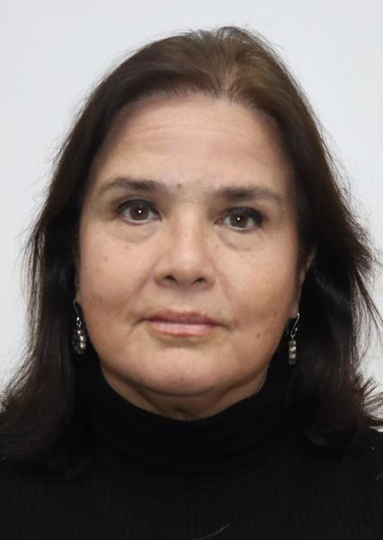
SENADOR
Universidad de San Martín de Porres / ABOGADA
Universidad de San Martín de Porres / BACHILLER EN DERECHO
CARLOS FERNANDO MESIA RAMIREZ
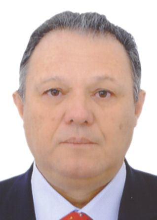
SENADOR
Universidad de San Martín de Porres / ABOGADO
Universidad de San Martín de Porres / BACHILLER EN DERECHO
CARLOS FERNANDO MESIA RAMIREZ
SENADOR
Universidad Católica de Santa María / LICENCIADO EN ADMINISTRACION DE EMPRESAS
Universidad Católica de Santa María / BACHILLER EN ADMINISTRACION DE EMPRESAS
CARLOS FERNANDO MESIA RAMIREZ
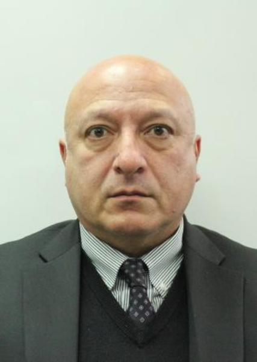
SENADOR
Universidad Nacional Federico Villarreal / BACHILLER EN CIENCIAS ECONOMICAS
Universidad Nacional Federico Villarreal / BECONOMITA
RITA ELENA AYASTA DE DIAZ
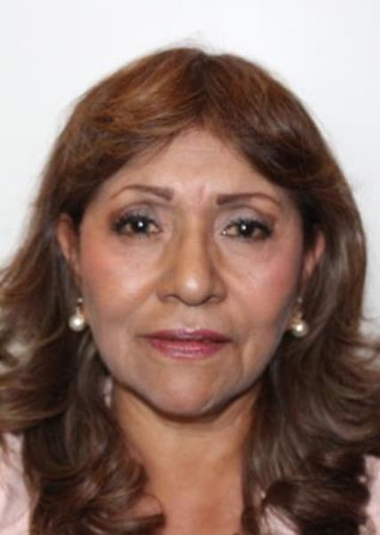
SENADOR
Universidad de San Martín de Porres / LICENCIADA EN TRABAJO SOCIAL
RICARDO RIVERA ROMERO
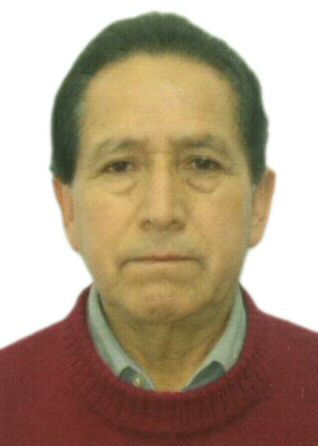
SENADOR
UNIVERSIDAD NACIONAL AGRARIA LA MOLINA / BACHILLER EN CIENCIAS AGRARIAS - AGRONOMIA
LILIANA ANGELICA PINEDO ACHACA
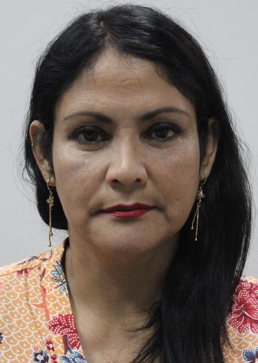
SENADOR
Universidad Nacional Daniel Alcides Carrión / BACHILLER EN CIENCIAS DE LA EDUCACION
JAIME AGUSTIN SOBERO TAIRA
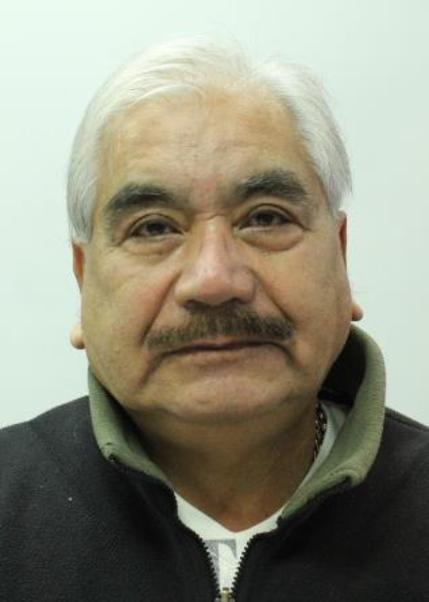
SENADOR
Universidad Nacional Federico Villarreal / INGENIERO EN PESQUERO
JENY LUZ LOPEZ MORALES
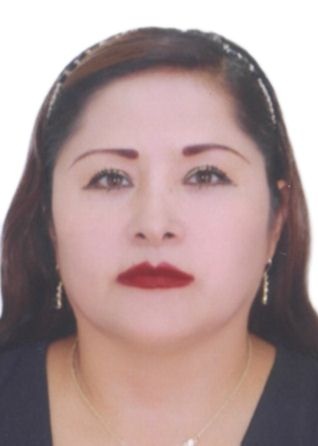
SENADOR
CONGRESO DE LA REPÚBLICA / CONGRESISTA
RAUL HUAMAN CORONADO
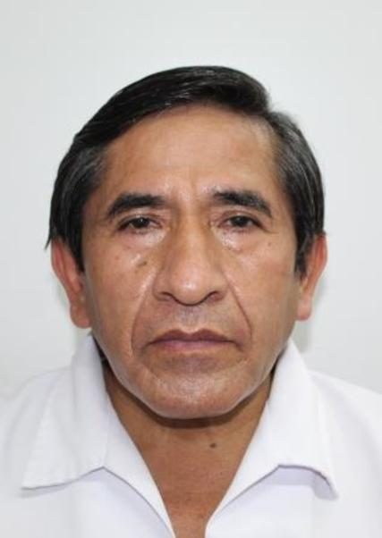
SENADOR
Universidad Nacional Mayor de San Marcos / SEGUNDA ESPECIALIDAD PROFESIONAL EN CIRUGIA PLASTICA
SANTUSA ANSIA MAMANI VILCA
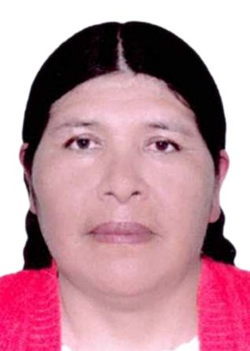
SENADOR
Independiente / OFICIO: Artesana
ERWIN TITO ORTEGA
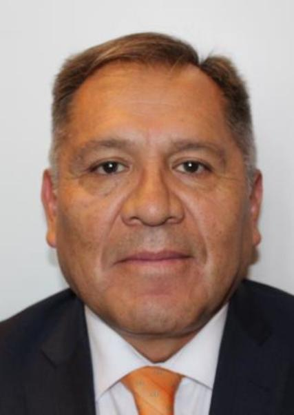
SENADOR
Universidad Nacional Federico Villarreal / BACHILLER EN MEDICINA
MARIA PILAR PEREZ VILLASANTE
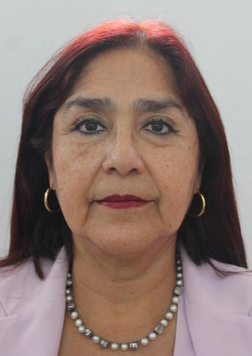
SENADOR
INSTITUTO SUPERIOR TECNOLOGICO ILO / ADMINISTRACIÓN
CESAR MILTON CAMPOS RAMIREZ
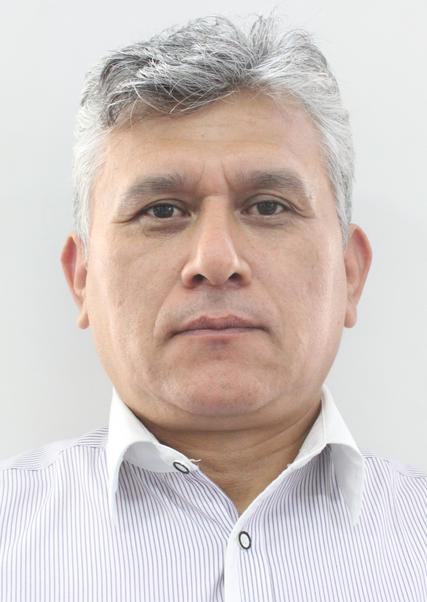
SENADOR
Universidad Nacional Hermilio Valdizán de Huánuco / CONTADOR PUBLICO
BETTY GLADYS ANANCULI GOMEZ
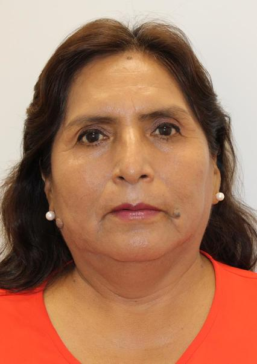
SENADOR
Universidad Nacional de Educación Enrique Guzmán y Valle / BACHILLER EN CIENCIAS DE LA EDUCACIÓN
JESUS ALEXANDER ALCALA MATEO
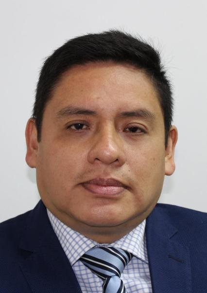
SENADOR
Universidad Inca Garcilaso de la Vega Asociación Civil / BACHILLER EN DERECHO Y CIENCIAS POLITICAS
Universidad Inca Garcilaso de la Vega Asociación Civil / ABOGADO
ELSA NORA TUESTA DE NOGUEIRA
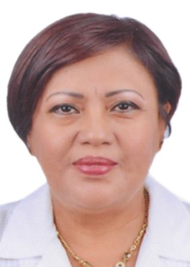
SENADOR
Universidad Nacional de Amazonia Peruana / Licenciada en Administración de Empresas
ALEXANDER GALLARDO SANDOVAL
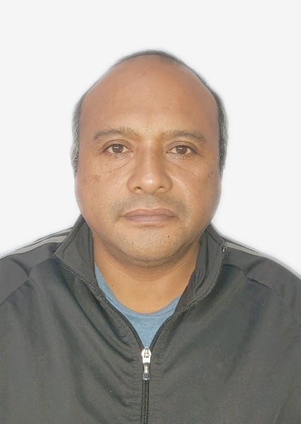
SENADOR
Universidad Nacional de Piura / INGENIERO PESQUERO
ESTELA MARTHA LEON REQUENA
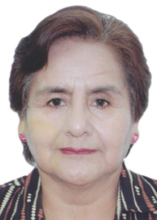
SENADOR
Universidad Nacional San Marcos / Licenciada en Contabilidad
JUAN MANUEL ALARCON ATO
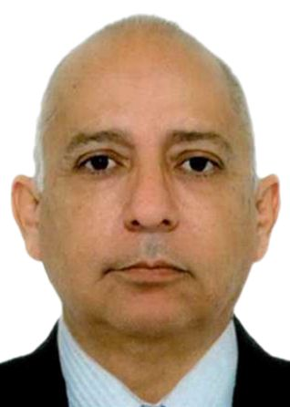
SENADOR
Universidad Peruana Cayetano Heredia / MEDICO CIRUJANO
Universidad Peruana Cayetano Heredia / BACHILLER EN MEDICINA
CECILIA ROSARIO VILLANUEVA OSHIRO
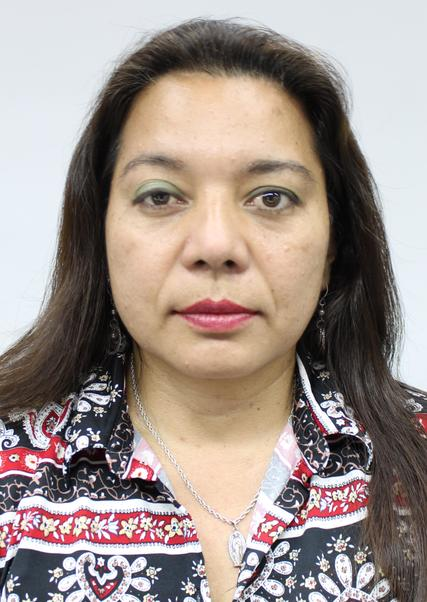
SENADOR
ESAE - Escuela Superior de Administración de empresas / Técnico en Computación
CARLOS WALTER MEJIA ESCAJADILLO
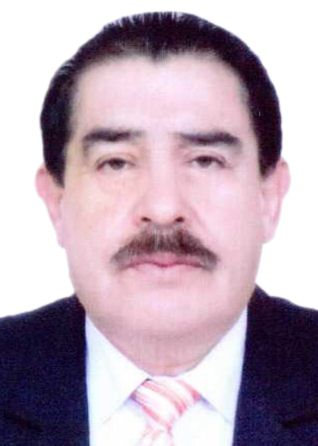
SENADOR
Universidad Inca Garcilaso de la Vega Asociación Civil / ABOGADO
MAGDA LILI MANCO PADILLA
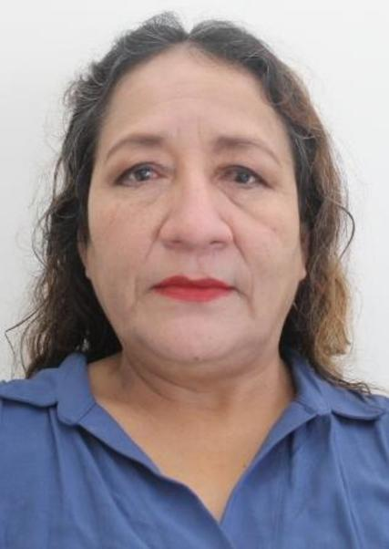
SENADOR
Congreso de la Republica del Perú / Coordinadora
CANDIDATOS A DIPUTADOS NACIONALES
POR AHORA NACION - AN.
Nombre
Foto
Cargo
CV
HARVEY JULIO COLCHADO HUAMANI
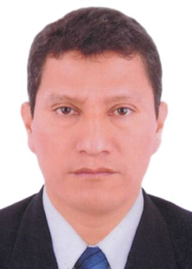
DIPUTADO
Escuela de Oficiales de la Policía Nacional del Perú / LICENCIADO EN ADMINISTRACION Y CIENCIAS POLICIALES
Universidad Nacional Federico Villarreal / BACHILLER EN DERECHO
INDIRA ISABEL HUILCA FLORES
DIPUTADO
Universidad Nacional Mayor de San Marcos / BACHILLER EN CIENCIAS SOCIALES ESPECIALIDAD SOCIOLOGIA
Universidad Nacional Mayor de San Marcos / LICENCIADA EN SOCIOLOGIA
CARLO MAGNO SALCEDO CUADROS
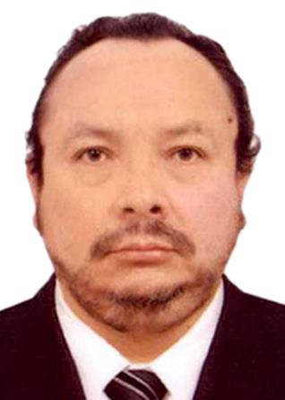
DIPUTADO
Universidad Nacional Mayor de San Marcos / ABOGADO
Universidad Nacional Mayor de San Marcos / BACHILLER EN DERECHO
NICOLY SOLEDAD ARAUJO GAMBOA
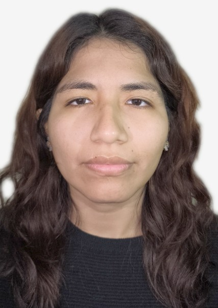
DIPUTADO
Universidad Nacional de Ingeniería / BACHILLER EN CIENCIAS CON MENCIÓN EN INGENIERÍA QUÍMICA
ANGEL RENATO MENESES CRISPIN
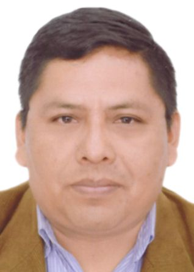
DIPUTADO
Universidad Nacional del Callao / BACHILLER EN ECONOMIA
Universidad Nacional del Callao / TÍTULO PROFESIONAL DE ECONOMISTA
JENNIFFER MELISSA PONTE GUERRERO
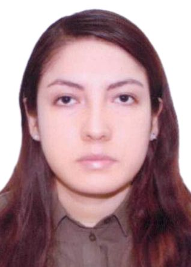
DIPUTADO
Universidad Peruana de Ciencias Aplicadas S.A.C. / BACHILLER EN COMUNICACIÓN AUDIOVISUAL Y MEDIOS INTERACTIVOS
BRAYAN AURELIO VALENTIN DELGADO
DIPUTADO
Universidad Nacional de Ingeniería / BACHILLER EN CIENCIAS CON MENCIÓN EN INGENIERÍA INDUSTRIAL
MARIA NIMIA MUÑOZ DIAZ
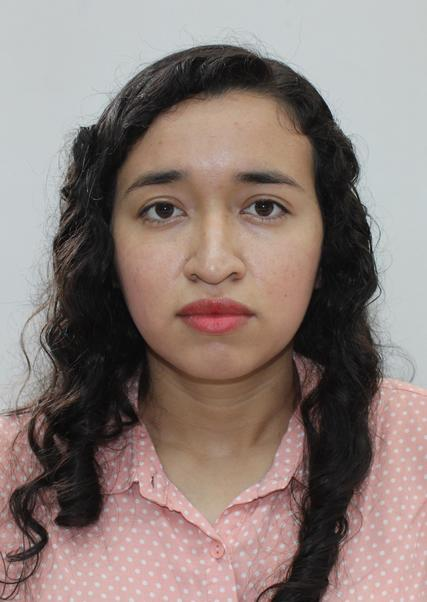
DIPUTADO
Universidad Nacional de Ingeniería / BACHILLER EN CIENCIAS CON MENCION EN INGENIERIA FISICA
SALVADOR AREVALO LA ROSA
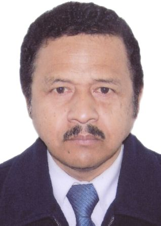
DIPUTADO
Universidad Nacional de Ingeniería / BACHILLER EN CIENCIAS CON MENCION EN INGENIERIA INDUSTRIAL
Universidad Nacional de Ingeniería / TITULO PROFESIONAL DE INGENIERO INDUSTRIAL
DELIA GARCIA ASTURIMA
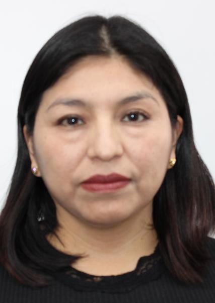
DIPUTADO
Universidad Nacional de San Cristóbal de Huamanga / BACHILLER EN CIENCIAS DE LA ENFERMERIA
Universidad Nacional de San Cristóbal de Huamanga / LICENCIADA EN ENFERMERIA
ROBERTO ALEJANDRO DIAZ ASTO
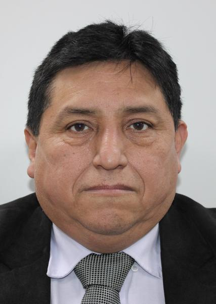
DIPUTADO
PARTIDO POLÍTICO PARTIDO POLITICO RESTAURACION NACIONAL - REGIDOR DISTRITAL - 2005 - 2006
NILDA ESPERANZA CARRANZA RODRIGUEZ
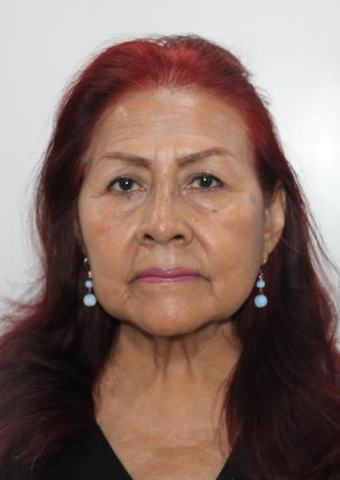
DIPUTADO
PERU POSIBLE - MIEMBRO DEL CONGRESO NACIONAL ORDINARIO - 2004 - 2017
CAROL VANESSA HUARI HUAMAN
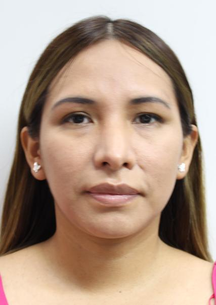
DIPUTADO
Universidad de San Martín de Porres / BACHILLER EN ENFERMERIA
OSWARD LUIS HIDALGO TORRES
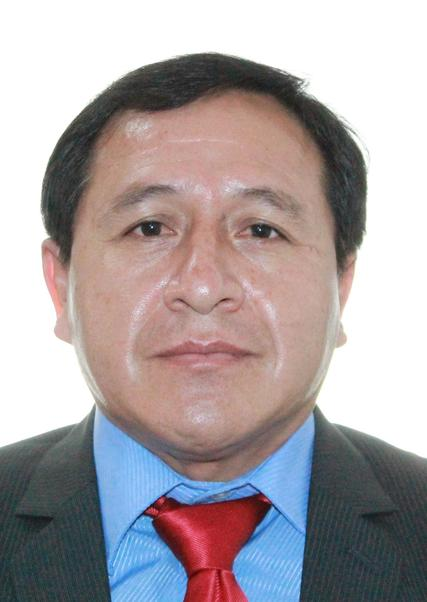
DIPUTADO
Universidad Nacional del Callao / BACHILLER EN ECONOMIA
Universidad Nacional del Callao / ECONOMISTA
TALIA MERCEDES MAYTA RODRIGUEZ
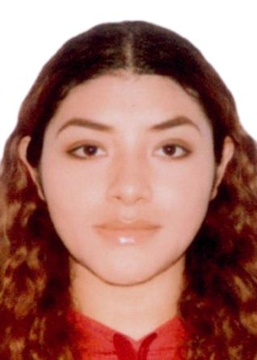
DIPUTADO
Instituto San Pablo / Podología
LUIS ALBERTO CHAMBI PAUCAR
DIPUTADO
ISTP María R. Araoz PInto / Técnico en Construcción Civil
ANITA MILEIDI ABANTO VILLEGAS
DIPUTADO
Universidad Nacional de Ingeniería / Ing. Económica
DAVID RAFAEL SANCHEZ ARANA
DIPUTADO
Universidad Nacional Mayor de San Marcos / LICENCIADO EN SOCIOLOGIA
Universidad Nacional Mayor de San Marcos / BACHILLER EN SOCIOLOGIA
GLORIA DAYANA ALEJANDRO YAÑEZ
DIPUTADO
Universidad Nacional Mayor de San Marcos / Derecho
Universidad Nacional Mayor de San Marcos / BACHILLER EN EDUCACION
JULIO VALDERRAMA CONTRERAS
DIPUTADO
Colegio Politécnico Pedro Ruiz Gallo / Electricidad
Empresa Corporación SATEL I EIRL / Técnico en Telecomunicación
MARIA ISABEL DURAND PARAGUAYS
DIPUTADO
Mercado las Tres Regiones de Puente Piedra / Comerciante de Aparatos Electrónicos
JOSEPH ELIAS DAGER ALVA
DIPUTADO
Pontificia Universidad Católica del Perú / BACHILLER EN HUMANIDADES CON MENCIÓN EN HISTORIA
UPontificia Universidad Católica del Perú / LICENCIADO EN HISTORIA
GLORIA MARIA MACHUCA CHINCHAY
DIPUTADO
ISPP "San Juan Bosco" / Profesor de Educación Primaria
RAFAEL JIMMY CAPARO CORONADO
DIPUTADO
Universidad Nacional de Ingeniería / BACHILLER EN INGENIERIA ECONOMICA
Universidad Nacional de Ingeniería / TÍTULO PROFESIONAL DE INGENIERO ECONOMISTA
ISABEL FLORCITA TAMARA MARQUEZ
DIPUTADO
Universidad Católica Los Ángeles de Chimbote / BACHILLER EN CIENCIAS CONTABLES Y FINANCIERAS
BERNARDINO JAIR MANRIQUE OLIVERA
DIPUTADO
Universidad Nacional de Ingeniería / BACHILLER EN CIENCIAS CON MENCION EN INGENIERIA DE PETROLEO Y GAS NATURAL
EVA LORENZA BONIFACIO PORRAS
DIPUTADO
Minimarket familiar / Comerciante de abarrotes
CHRISTIAN BENJAMIN ZEGARRA CARRILLO
DIPUTADO
Universidad Nacional Agraria La Molina / ECONOMISTA
Universidad Nacional Agraria La Molina / BACHILLER EN CIENCIAS - ECONOMÍA
YESENIA JUDITH LEIVA BRAVO
DIPUTADO
Universidad de San Martín de Porres / BACHILLER EN GESTION DE RECURSOS HUMANOS
GUILLERMO ANDRADE JULIANES
DIPUTADO
Universidad Inca Garcilaso de la Vega / Técnico en Seguros
MADAI ARELLANO OLAECHEA
DIPUTADO
Universidad Privada del Norte S.A.C. / BACHILLER EN INGENIERIA INDUSTRIAL
Universidad Privada del Norte S.A.C. / INGENIERA INDUSTRIAL
CANDIDATOS A DIPUTADOS REGIONALES
POR PERU LIBRE
Nombre
Foto
Cargos
CV
JAKELYN FLORES PEÑA
DIPUTADO
Universidad Peruana Los Andes / INGENIERA CIVIL
Universidad Peruana Los Andes / BACHILLER EN INGENIERIA CIVIL
ROBERTO REYMUNDO QUISPE
DIPUTADO
Universidad Peruana Los Andes / Bachiller en Administración y Sistemas
MARIA ELENA CERRON ALIAGA
DIPUTADO
Universidad Nacional del Centro del Perú / Bachiller en Ciencias de la Comunicación
JOSE CARLOS PALOMINO CAYETANO
DIPUTADO
Universidad Nacional de Huancavelica / BACHILLER EN CIENCIAS CONTABLES
Universidad Nacional de Huancavelica / CONTADOR PÚBLICO